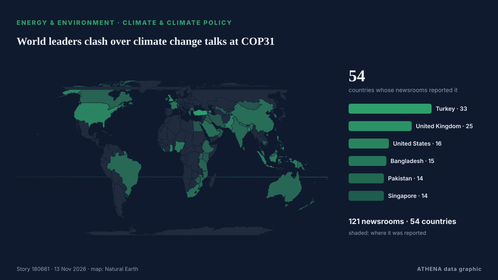

Energy, Resources & Environment
SponsoredPresented by  Cybernetics and Artificial Intelligence Lab Welcome to the Cybernetics and Artificial Intelligence Laboratory, established at the Department of Business Administration of the National and Kapodistrian University of Athens. The lab is headed by Professor Dimitrios Thomakos. The lab aims to do research that can be published in top venues. Our research uses tools and methods of Artificial Intelligence, and lies in the following areas: - Forecasting - Decision making - Cyber security - Finance We are always looking forward to collaborating with exceptional students!
Cybernetics and Artificial Intelligence Lab Welcome to the Cybernetics and Artificial Intelligence Laboratory, established at the Department of Business Administration of the National and Kapodistrian University of Athens. The lab is headed by Professor Dimitrios Thomakos. The lab aims to do research that can be published in top venues. Our research uses tools and methods of Artificial Intelligence, and lies in the following areas: - Forecasting - Decision making - Cyber security - Finance We are always looking forward to collaborating with exceptional students!

Climate & climate policyWorld leaders clash over climate change talks at COP31
Civil society groups from Bangladesh, Bhutan and Nepal call for predictable, grant-based adaptation funding. from The Business Standard (Bangladesh) (working feed)
| 31 Oct | 39 |
|---|---|
| 1 Nov | 55 |
| 2 Nov | 121 |
| 3 Nov | 93 |
| 4 Nov | 99 |
| 5 Nov | 96 |
| 6 Nov | 60 |
| 7 Nov | 47 |
| 8 Nov | 56 |
| 9 Nov | 108 |
| 10 Nov | 104 |
| 11 Nov | 99 |
| 12 Nov | 54 |
| 13 Nov | 0 |
The planet ‘is being killed’, Greta Thunberg tells Cop31 climate summit
Swedish activist criticised world governments for their failure to prevent environmental breakdown The planet is “not dying, it is being killed and we know by who”, said Greta Thunberg, who… from The Guardian
Orlen terminates QatarEnergy LNG supply contract
Poland’s Orlen said it had exercised its right to terminate one of the two long-term LNG supply contracts with a unit state-owned LNG giant QatarEnergy due to an ongoing force majeure resulting in an… from LNG Prime
Naftogaz Gets Dutch Grant to Secure Winter Gas
Ukraine's state-owned Naftogaz secured an agreement for a Dutch government grant of over $25 million through the EBRD to help secure natural gas supply, as Ukraine and Russia continue to exchange… from Rigzone
Kurdistan President, Armenian PM explore closer ties, regional diplomacy
Shafaq News- Antalya Kurdistan Region President Nechirvan Barzani and Armenian Prime Minister Nikol Pashinyan discussed expanding cooperation between Yerevan, Baghdad, and Erbil on Thursday… from Shafaq News (English)
EU purchases of Russian Yamal LNG rise to over $9 billion in 2026, despite October dip
The European bloc has already paid over one-fifth more for Yamal LNG this year than throughout the entire 2025, according to Urgewald. from Kyiv Independent
Climate progressives won the midterms without saying ‘climate’
How the ideas behind the Green New Deal got an update for the Trump era. from Grist
UN chief urges governments to tax Big Oil windfall profits
‘Polluters must pay,’ says António Guterres. from Euractiv
Web Summit Cancels Day Two As Storm Charles Hits Lisbon
Storm Charles has put paid to day two of Web Summit in Lisbon, Portugal. from Deadline
ADNOC widens its Asian footprint with decade-long LNG offtake deal
French energy giant TotalEnergies has signed a heads of agreement with Jiangsu Guoxin Group, a major energy company in China's Jiangsu province, to deliver 900,000 tons of LNG per year. from LNG Prime
'Significant evidence' of placer gold in Punjab rivers, says CM Maryam at minerals investment forum
Punjab Chief Minister Maryam Nawaz said on Thursday that there was “significant evidence” of “sufficient quantities” of placer gold flowing in the province’s five rivers. from Dawn
UK appoints 'climate security' envoy, a world first
ANTALYA: British Prime Minister Andy Burnham announced on Thursday the appointment of a special envoy focused on “climate security“, a world first, to better prepare for the growing impacts of global… from New Straits Times
Iran wants compensation for environmental damage from US-Israeli strikes
'We expect the global community to establish a genuine and meaningful link between climate commitments in times of peace and responsibility in times of war,' says Iran's President Masoud Pezeshkian. from Rappler
Scientists predict 2026 hottest year on record as COP31 summit begins
By Nana Karikari, Senior Global Affairs Correspondent The world is on course for its hottest year in recorded history as the planet is hit with warming from climate change and El Niño. from GBC Ghana Online
Turkey, Saudi Arabia sign pact for 3,000 MW of wind power projects
Turkey and Saudi Arabia on Tuesday signed a pact for 3,000 megawatts of wind power projects in Turkey, the second phase of an agreement with Saudi energy company ACWA Power, the state-run Anadolu… from Turkish Minute
Erdogan meets Bosnia-Herzegovina presidency members at COP31 in Antalya
In the evening, Tarique Rahman will attend a dinner hosted by Turkish President Recep Tayyip Erdogan in honour of world leaders attending the summit. from The Business Standard (Bangladesh) (working feed)
UN chief urges world to end fossil fuel addiction at COP31
UN chief António Guterres called for a new global climate justice agreement at COP31 on Wednesday, urging governments to tax fossil fuel companies to help countries bearing the brunt of a crisis they… from UN News
ExxonMobil launches legal challenge to EU carbon capture rules
US oil company invokes investment treaty to challenge Brussels’ green regulations and seek suspension of timing requirements. from Financial Times - Markets
Climate action must continue even if 'US is not here', Pacific leaders say
The United States government has no official presence at the climate talks in Türkiye, marking the second consecutive year the Trump administration has skipped the annual summit. from RNZ Pacific
Iran will not allow enriched nuclear material to leave the country, security chief says
Dubai: Tehran will not allow even a single particle of enriched nuclear material to leave the country, Iran's security chief Mohsen Rezaei said in an interview with Lebanon's pro-Iranian Al Mayadeen… from Deccan Herald
Iran president accuses US, Israel of causing environmental damage during war
Iranian President Masoud Pezeshkian accused the United States and Israel of inflicting severe environmental damage during attacks on the Islamic republic, in his speech on Wednesday at the UN Climate… from The Korea Times
India pollution monitors overwhelmed by toxic smog
India’s air pollution monitors were overwhelmed this week by toxic smog so severe that concentrations exceeded their upper measurement limit, equivalent to 66 times the World Health Organisation’s… from Dawn
Gas prices fall below $4 per gallon for the first time since July
The national average for the cost of gas dropped to less than $4 per gallon on Tuesday for the first time since July, as prices soared in the months following the start of the Iran war. from The Hill
Portugal on alert as Storm Charles heads towards the mainland
Mainland Portugal is under a state of alert today, Wednesday, 11 November, as Storm Charles moves towards the country after bringing strong winds to Madeira. from The Portugal News
Planet One opens new exploration frontier with offshore Ghana hydrocarbon discovery
Planet One Oil & Gas has announced the discovery of hydrocarbons at its Nya Gyidie-1X exploration well in the Deepwater Cape Three Points (DWCTP) Block offshore Ghana. from MyJoyOnline
NAHCON, Saudi Arabia sign 2027 Hajj agreement
The fourth conference of the Working Group of the Defence and Security Committee of the Greece–Saudi Arabia Supreme Council for Strategic Cooperation has been successfully concluded. from Naftemporiki (English)
El Niño looms over Colombia's battle with fire-prone plant
Colombian farmer Albert Montano razes a beautiful thorny shrub, fearful that its yellow flowers will fuel potent wildfires expected during the El Niño weather pattern. from Phys.org
ExxonMobil Takes First Step Toward Venezuela Oil Return
ExxonMobil said on Monday it signed a memorandum of understanding with Venezuelan state oil company PDVSA to assess upstream oil opportunities, marking a potential return to the country nearly two… from MarineLink
Oil prices are so high that CO2 emissions from fossil fuels are dropping
It's not quite a victory for humanity's transition to renewables. from Science News
UNICEF says Israel blocks Gaza basin repairs, warns of flood risk
GENEVA: The UN children's agency said Israel had rejected the importation of equipment needed to repair a water basin in Gaza, and warned that the facility could overflow and endan... from Oman Observer
Oil rises from two-month low as Hormuz shipping attacks offset Iran truce hopes
BEIJING: Oil prices rose on Wednesday after falling to two-month lows in the previous session, as the market swung between hopes for a de-escalation in the Iran war and concerns about ongoing… from Business Recorder
Brent Crude Falls Below $90 for First Time Since August
Brent Crude prices plunged to below $90 per barrel early on Tuesday, falling below that threshold for the first time since August, as U.S. from OilPrice.com
Ukrainian strikes cut Russia's oil refining capacity by 30%, Reuters reports
Over the past week, Ukrainian attacks disrupted operations or caused emergency situations at nine of Russia's 35 major refineries, according to Reuters. from Kyiv Independent
Oil Price Falls Below $90 First Time in 4 Months as Trump Signals Iran De-escalation
• Development portends mixed fortunes for Nigeria Emmanuel Addeh in Abuja Nigeria’s crude benchmark, Brent, fell below the $90 per barrel threshold yesterday for the first time since August, as. from ThisDay (Nigeria)
Iran urges UN, IAEA to condemn US offer of $20M for nuclear information
Foreign minister warns US initiative could encourage espionage, endanger nuclear scientists and undermine IAEA safeguards. from Anadolu Agency (English)